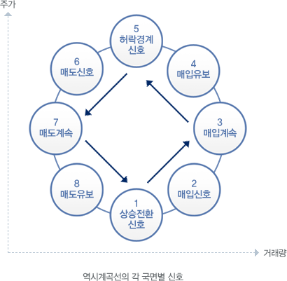

주식교실 ㅣ 기술적분석
주가와 거래량은 상관관계가 매우 높다는데 근거를 두고 주가와 거래량을 각각 종축과 횡축에 나타내어 주가와 거래량의 이동평균선에 의한 매일매일의 교차점을 선으로 연결한 지표로서 시계 반대방향으로 좌회전 곡선이 되는 경우가 많다고 해서 역시계곡선(counter-clockwise curve)이라고 부른다.
- 주가와 거래량의 이동평균치를 계산하고
- 종축에 주가를 나타내고,
- 횡축에 거래량을 나타내며,
- 동축과 횡축의 교차점을 연결한다.
- 거래량이 늘면서 주가가 바닥수준에 머물고 있을 때가 하락으로부터 상승으로 전환이 예상되는 신호이다.
- 거래량이 늘고 주가도 오름세로 전환될 때가 매수신호이다.
- 거래량은 더 이상 늘지 않지만 주가가 계속 올라가면 매수를 계속해도 좋다.
- 거래량이 줄기 시작하고 주가만 올라가는 상황이면 신규매입은 보류해야 한다.
- 거래량이 더욱 줄고 주가도 더 이상 올라가지 않을 때에는 하락전환이 예상되는 경계시점이다.
- 거래량이 줄고 주가도 하락하면 매도신호이다.
- 거래량은 더 이상 줄지 않고 주가만 하락할 때도 계속적인 매도신호라 할 수 있다.
- 거래량은 증가하나 주가는 하락할 때에는 상승전환신호로서 매도를 보류해야 한다.
